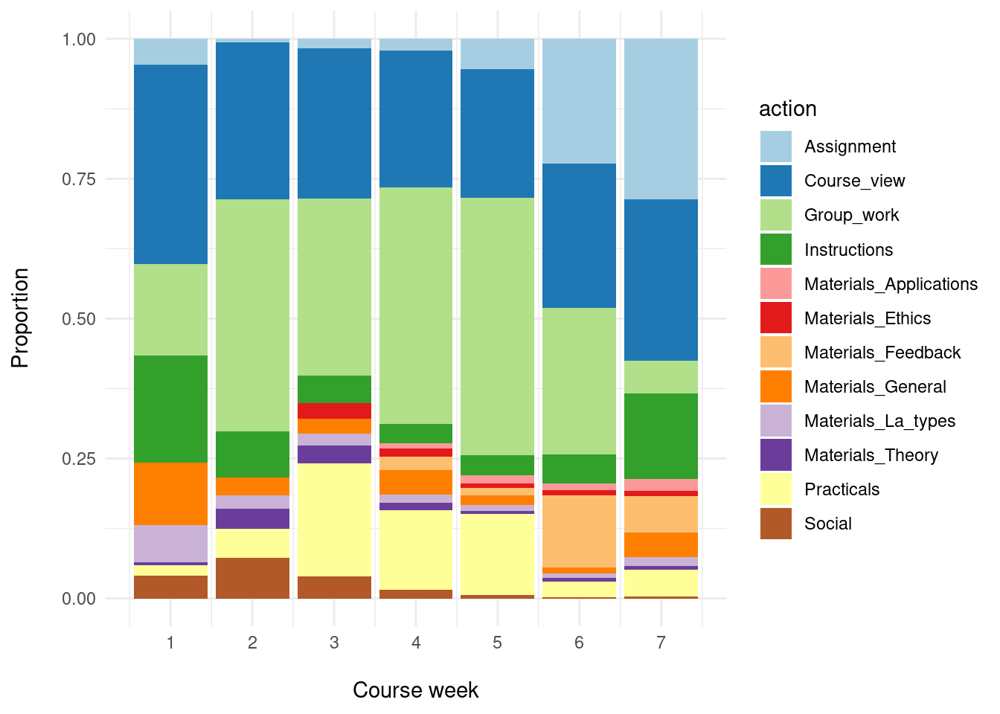

library(tidyverse)
library(lubridate)
library(rio)7 Predictive Modelling in Learning Analytics: A Machine Learning Approach in R
Abstract
Prediction of learners’ course performance has been a central theme in learning analytics (LA) since the inception of the field. The main motivation for such predictions has been to identify learners who are at risk of low achievement so that they could be offered timely support based on intervention strategies derived from analysis of learners’ data. To predict student success, numerous indicators, from varying data sources, have been examined and reported in the literature. Likewise, a variety of predictive algorithms have been used. The objective of this chapter is to introduce the reader to predictive modelling in LA, through a review of the main objectives, indicators, and algorithms that have been operationalized in previous works as well as a step-by-step tutorial of how to perform predictive modelling in LA using R. The tutorial demonstrates how to predict student success using learning traces originating from a learning management system, guiding the reader through all the required steps from the data preparation all to the evaluation of the built models.
1 Introduction
Prediction of students’ performance has been a central theme within the field of learning analytics (LA) since the early days [1]. In fact, the initial conceptualization of the field has highlighted the use of digital data collected from learners to predict their success —among other usages. Such predictions hold the promise to help identify those who are at risk of low achievement, in order to proactively offer early support and appropriate intervention strategies based on insights derived from learners’ data [1, 2]. Nevertheless, the prediction of students’ performance is not unique to LA and was an important theme in related fields even before LA, e.g., academic analytics [3], educational data mining [4], and even far earlier in education research at large [5].
Such widespread, longstanding and continuous centrality of early and accurate prediction of students’ performance lends itself to the premise that detection of early signs could allow a timely prevention of, e.g., dropout, low achievement, or undesired outcomes in general [6]. More importantly, identifying the predictors could help inform interventions, explain variations in outcomes and inform educators of why such outcomes happened —a form of predictive modelling that is often referred to as explanatory modelling [7]. Noticeable is the famous example of the Signal system at the University of Purdue, where predictions were based on digital data collected from an online learning platform [8]. Signal produced predictions and classified students into three categories according to “safety” and presented the students with traffic-light-inspired dashboard signs, where at-risk students get a red light. However, the influence of Signal on retention rates is unclear and often debated [9]. Several other systems were designed, built and applied in practice, e.g., OU analyse at the Open University, where the system offers informative dashboards to students and teachers as well as predictive models to forecast students' performance [10].
Successful prediction of students’ performance has been demonstrated repeatedly in several LA studies across the years [11]. In general, the majority of the published studies used features extracted from logged learning trace data (i.e., data about students’ interactions with online learning activities and resources) and achieved accurate predictions for a considerable number of students. Yet, most of such studies examined a single course or what is often referred to as a convenience sample (i.e., a course with a sufficiently large and accessible dataset) [11]. Studies that attempted to apply predictive modelling across several courses have not found similar success [12–15]. For instance, Finnegan et al. [15] examined 22 courses across three academic domains using student log-trace data recorded from the learning management system. The authors found considerable differences among predictive models developed for individual courses regarding their predictive power as well as the significance of features. Similar results were reported by Gašević et al. [12] who used data from nine undergraduate courses in different disciplines to examine how instructional variations affected the prediction of academic success. Gašević et al. [12] found that predictors were remarkably different across courses with no consistent pattern that would allow for having one model applicable across all courses. Similarly, Conijn et al. [13] examined 17 courses across several subjects and confirmed the considerable variability of the indicators and predictive models across courses.
Studies within the same domain have also found significant differences in predictors and predictive models. For instance, a recent study [14] examined 50 courses with a similar course design and homogeneous pedagogical underpinning. The authors found variations among different offerings of the same course, that is, the same predictor was statistically significantly correlated with performance in one course offering, but not in the same course offered to similar students in the next year. Furthermore, some predictors were more consistent than others e.g., the frequency of online sessions was more consistent than the frequency of lectures. In a similar vein, Jovanović et al. [16] applied mixed-effect linear modelling to data from fifty combined courses and developed several predictive models with different combinations of features. All predictive models in the work by Jovanović et al. [16] were able to explain only a limited proportion of variations in students’ grades. The intraclass correlation coefficient (a measure of source of variability) of all models revealed that the main source of variability were students themselves, that is, students’ specific features not captured in the logged data, pointing to the importance of taking students’ international conditions into account.
The goal of this chapter is to introduce the reader to predictive LA. The next section is a review of the existing literature, including the main objectives, indicators and algorithms that have been operationalized in previous works. The remainder of the chapter is a step-by-step tutorial of how to perform predictive LA using R. The tutorial describes how to predict student success using students’ online trace log data extracted from a learning management system. The reader is guided through all the required steps to perform prediction, including the data preparation and exploration, the selection of the relevant indicators (i.e., feature engineering) and the actual prediction of student success.
2 Predictive modelling: objectives, features, and algorithms
Extensive research in the LA field has been devoted to the prediction of different measures of student success, as proven by the existence of multiple reviews and meta-analyses on the topic [17–20]. Among the measures of student success that have been examined in the literature are student retention [21], grades [22], and course completion [23]. Predicting lack of success has also been a common target of predictive analytics, mostly in the form of dropout [24], with special interest in the early prediction of at-risk students [25, 26].
To predict student success, numerous indicators from varying data sources have been examined in the literature. Initially, indicators were derived from students’ demographic data and/or academic records. Some examples of such indicators are age, gender, and previous grades [27]. More recent research has focused on indicators derived from students’ online activity in the learning management system (LMS) [17, 20]. Many of such indicators are derived directly from the raw log data such as the number of total clicks, number of online sessions, number of clicks on the learning materials, number of views of the course main page, number of assignments completed, number of videos watched, number of forum posts [13, 14, 28–31]. Other indicators are related to time devoted to learning, rather than to the mere count of clicks, such as login time, login frequency, active days, time-on-task, average time per online session, late submissions, and periods of inactivity [13, 14, 32–35]. More complex indicators are often derived from the time, frequency, and order of online activities, such as regularity of online activities, e.g., regularity of accessing lecture materials [16, 36, 37], or regularity of active days [14, 16]. Network centrality measures derived from network analysis of interactions in collaborative learning settings were also considered, as they compute how interactions relate to each other and their importance [38]. Research has found that predictive models with generic indicators are only able to explain just a small portion of the overall variability in students’ performance [36]. Moreover, it is important to take into account learning design as well as quality and not quantity of learning [17, 20].
The variety of predictive algorithms that have been operationalized in LA research is also worth discussing. Basic algorithms, such as linear and logistic regression, or decision trees, have been used for their explainability, which allows teachers to make informed decisions and interventions related to the students “at risk” [37]. Other machine learning algorithms have also been operationalized such as kNN or random forest [39, 40], although their interpretability is less straightforward. Lastly, the most cutting-edge techniques in the field of machine learning have also made their way to LA, such as XGBoost [41] or Neural Networks [42]. Despite the fact that the accuracy achieved by these complex algorithms is often high, their lack of interpretability is often pointed out as a reason for teachers to avoid making decisions based on their outcomes [7, 43].
It is beyond the scope of this review to offer a comprehensive coverage of the literature. Interested readers are encouraged to read the cited literature and the literature reviews on the topics [11, 14, 17–20]
3 Predicting students’ course success early in the course
3.1 Prediction objectives and methods
The overall objective of this section is to illustrate predictive modelling in LA through a typical LA task of making early-in-the-course predictions of the students’ course outcomes based on the logged learning-related data (e.g., making predictions of the learners’ course outcomes after log data has been gathered for the first 2-3 weeks). The course outcomes will be examined and predicted in two distinct ways: i) as success categories (high vs. low achievement), meaning that the prediction task is approached with classification models; ii) as success score (final grades), in which case the development of regression models is required.
To meet the stated objectives, the following overall approach will be applied: create several predictive models, each one with progressively more learning trace data (i.e., logged data about the learners’ interactions with course resources and activities), as they become available during the course. In particular, the first model will be built using the learning traces available at the end of the first week of the course; the second model will be built using the data available after the completion of the second week of the course (i.e., the data logged over the first two weeks); then, the next one will be built by further accumulating the data, so that we have learning traces for the first three weeks, and so on. In all these models, the outcome variable will be the final course outcome (high/low achievement for classification models, that is, the final grade for regression models). We will evaluate all the models on a small set of properly chosen evaluation metrics and examine when (that is, how early in the course) we can make reasonably good predictions of the course outcome. In addition, we will examine which learning-related indicators (i.e., features of the predictive models) had the highest predictive power.
3.2 Context
The context of the predictive modelling presented in this chapter is a postgraduate course on learning analytics (LA), taught at University of Eastern Finland. The course was 6 weeks long, though some assignments were due in the week after the official end of the course. The course covered several LA themes (e.g., Introductory topics, Learning theories, Applications, Ethics), and each theme was covered roughly in one week of the course. Each theme had a set of associated learning materials, mostly slides, and reading resources. The course reading resources included seminal articles, book chapters, and training materials for practical work. The course also contained collaborative project work (referred to as group projects). In the group project, students worked together in small groups to design an LA system. The group project was continuous all over the course and was designed to align with the course themes. For instance, when students learned about LA data collection, they were required to discuss the data collection of their own project. The group project has two grades, one for the group project as a whole and another for the individual contribution to the project. It is important to note here that the dataset is based on a synthetic anonymized version of the original dataset and was augmented to three times the size of the original dataset. For more details on the course and the dataset, please refer to the dataset chapter [44] of the book.
3.3 An overview of the required tools (R packages)
In addition to a set of tidyverse packages that facilitate general purpose data exploration, wrangling, and analysis tasks (e.g., dplyr, tidyr, ggplot2, lubridate), in this chapter, we will also need a few additional R packages relevant for the prediction modelling tasks:
- The
caret(Classification And REgression Training) package [45] offers a wide range of functions that facilitate the overall process of development and evaluation of prediction models. In particular, it includes functions for data pre-processing, feature selection, model tuning through resampling, estimation of feature importance, and the like. Comprehensive documentation of the package, including tutorials, is available online1.
The
randomForestpackage [46] provides an implementation of the Random Forest prediction method [47] that can be used both for the classification and regression tasks.The
performancepackage [48] offers utilities for computing indices of model quality and goodness of fit for a range of regression models. In this chapter, it will be used for estimating the quality of linear regression models. The package documentation, including usage examples, is available online2.
3.4 Data preparation and exploration
The data that will be used for predictive modelling in this chapter originates from the LMS of a blended course on LA. The dataset is publicly available in a GitHub repository4, while its detailed description is given in the book’s chapter on datasets [44]. In particular, we will make use of learning trace data (stored in the Events.xlsx file) and data about the students’ final grades (available in the Results.xlsx file).
We will start by familiarising ourselves with the data through exploratory data analysis.
After loading the required packages, we will load the data from the two aforementioned data files:
events = import("https://github.com/lamethods/data/raw/main/1_moodleLAcourse/Events.xlsx")
results = import("https://github.com/lamethods/data/raw/main/1_moodleLAcourse/Results.xlsx")We will start by exploring the events data, and looking first into its structure:
eventsSince we intend to build separate predictive models for each week of the course, we need to be able to organise the events data into weeks. Therefore, we will extend the events data frame with additional variables that allow for examining temporal aspects of the course events from the weekly perspective. To that end, we first order the events data based on the events’ timestamp (timecreated) and then add three auxiliary variables for creating the course_week variable: weekday of the current event (wday), weekday of the previous event (prev_wday), and indicator variable for the start of a new week (new_week). The assumption applied here is that each course week starts on Monday and the beginning of a new week (new_week) can be identified by the current event being on Monday (wday=="Mon") while the previous one was on any day other than Monday (prev_wday!="Mon") :
events |>
arrange(timecreated) |>
mutate(wday = wday(timecreated,
label = TRUE,
abbr = TRUE,
week_start = 1)) |>
mutate(prev_wday = lag(wday)) |>
mutate(new_week = ifelse((wday == "Mon") & (is.na(prev_wday) | prev_wday != "Mon"),
yes = TRUE, no = FALSE)) |>
mutate(course_week = cumsum(new_week)) -> eventsHaving created the variable that denotes the week of the course (course_week), we can remove the three auxiliary variables, to keep our data frame tidy:
events |> select(-c(wday, prev_wday, new_week)) -> eventsWe can now explore the distribution of the events across the course weeks. The following code will give us the count and proportion of events per week (with proportions rounded to the 4th decimal):
events |>
count(course_week) |>
mutate(prop = round(n/nrow(events), 4))The output of the above lines show that we have data for seven weeks: six weeks of the course plus one more week, right after the course officially ended but students were still able to submit assignments. We can also observe that the level of students’ interaction with course activities steadily increased up until week 5 and then started going down.
Let us now move to examining the factor variables that represent different types of actions and logged events. First, we can check how many distinct values each of these variables has:
events |>
summarise(across(c(Event.context, Component:Action), n_distinct))We can also examine unique values of each of the four variables, but it is better to examine them together, that will help us better understand how they relate to one another and get a better idea of the semantics of events they denote. For example, we can examine how often distinct Component, Event, and Action values co-occur:
events |>
count(Component,Event.name, Action) |>
arrange(Component, desc(n)) Likewise, we can explore how Action and Log values are related (i.e., co-occur):
events |>
count(Action, Log) |>
arrange(Action) Having explored the four categorical variables that capture information about the students’ interactions with course resources and activities, we will select the Action variable as the most suitable one for further analysis. The reason for choosing the Action variable is twofold: i) it is not overly granular (it has 12 distinct values), and thus allows for the detection of patterns in the learning trace data; ii) it captures sufficient information about the distinct kinds of interaction the events refer to. In fact, the Action variable was manually coded by the course instructor to offer a more nuanced way of analysis. The coding was performed to group actions that essentially indicate the same activities under the same label. For instance, logs of viewing feedback from the teacher were grouped under the label feedback. Practical activities (Social network analysis or Process mining) were grouped under the label practicals. In the same way, accessing the group work forums designed for collaboration, browsing, reading others’ comments, or writing were all grouped under the label group_work [50].
We will rename some of the Action values to make it clear that they refer to distinct topics of the course materials:
topical_action <- c("General", "Applications", "Theory", "Ethics", "Feedback", "La_types")
events |>
mutate(action = ifelse(test = Action %in% topical_action,
yes = str_glue("Materials_{Action}"),
no = Action),
.keep = "unused") -> eventsLet us now visually examine the distribution of events across different action types and course weeks:
# Compute event counts across action types and course weeks
events |>
count(course_week, action) |>
arrange(course_week, desc(n)) -> action_dist_across_weeks
# Visualise the event distribution
action_dist_across_weeks |>
mutate(Action = as.factor(action)) |>
ggplot(aes(x = course_week, y = n, fill = action)) +
geom_col(position = position_fill()) +
scale_fill_brewer(palette = 'Paired') +
scale_x_continuous(breaks = seq(1,7)) +
labs(x = "\nCourse week", y = "Proportion\n") +
theme_minimal()
From the plot produced by the above lines of code (Figure 21.1), we can observe, for example, that group work (Group_work) was the most represented type of actions from week 2 till the end of the course (week 6). It is followed by browsing the main page of the course containing the course materials, announcements and updates (Course_view) and working on practical tasks (Practicals). We can also note that the assignment-related actions (Assignment) are present mostly towards the end of the course.
Now that we have familiarised ourselves with the events data and done some initial data preparation steps, we should do some final ‘polishing’ of the data and store it to have it ready for further analysis.
# Keep only the variables to be used for further analysis and
# Rename some of the remaining ones to keep naming consistent
events |>
select(user, timecreated, course_week, action) |>
rename(week = course_week, ts = timecreated) -> events
# Save the prepared data in the R native format
dir.create("preprocessed_data")
saveRDS(events, "preprocessed_data/events.RDS")The next step is to explore the grades data that we previously loaded into the results data frame
resultsEven though the results dataset includes the students’ grades on individual assignments, we will be able to use just the final grade (Final_grade) since we do not have information when during the course the individual assignment grades became available.
To get an overall understanding of the final grade distribution, we will compute the summary statistics and plot the density function for the Final_grade variable:
summary(results$Final_grade) Min. 1st Qu. Median Mean 3rd Qu. Max.
0.000 5.666 7.954 7.254 9.006 10.000 ggplot(results, aes(x = Final_grade)) +
geom_density() +
labs(x = "Final grade",
title = "Distribution of the final grade") +
theme_minimal()
We can clearly notice both in the summary statistics and the distribution plot (Figure 20.2) that the final grade is not normally distributed, but skewed towards higher grade values.
As noted in Section 7.3.1, we will build two kinds of prediction models: models that predict the final grade (regression models) as well as models that predict whether a student belongs to the group of high or low achievers (classification models). For the latter group of models, we need to create a binary variable (e.g., Course_outcome) indicating if a student is in the high or low achievement group. Students whose final grade is above the 50th percentile (i.e., above the median) will be considered as being high achievers in this course (High), the rest will be considered as having low course achievement (Low):
results |>
mutate(Course_outcome = ifelse(test = Final_grade > median(Final_grade),
yes = "High", no = "Low")) |>
mutate(Course_outcome = factor(Course_outcome)) -> resultsNow that we have prepared the outcome variables both for regression and classification models (Final_grade and Course_outcome, respectively), we can save them for later use in model building:
results |>
select(user, Final_grade, Course_outcome) |>
saveRDS("preprocessed_data/final_grades.RDS")3.5 Feature engineering
After the data has been preprocessed, we can focus on feature engineering, that is, the creation of new variables (features) to be used for model development. This step needs to be informed by the course design and any learning theory that underpins the course design, so that the features we create and use for predictive modelling are able to capture relevant aspects of the learning process in the given learning settings. In addition, we should consult the literature on predictive modelling in LA (see Section 7.2), to inform ourselves about the kinds of features that were good predictors in similar learning settings. Following such an approach, we have identified the following event-based features as potentially relevant:
- Features based on learning action counts
- Total number of each type of learning actions
- Average number of actions (of any type) per day
- Entropy of action counts per day
- Features based on learning sessions:
- Total number of learning sessions
- Average (median) session length (time)
- Entropy of session length
- Features based on number of active days (= days with at least one learning session)
- Number of active days
- Average time distance between two consecutive active days
In addition to the course specific features (A1), the feature set includes several course-design agnostic (i.e., not directly related to a specific course design) features (e.g., A2 and A3) that proved as good predictors in similar (blended) learning settings [14, 16, 36, 51]. Furthermore, the chosen features allow for capturing both the amount of engagement with the course activities (features A1, A2, B1, B2, C1) and regularity of engagement (features A3, B3, C2) at different levels of granularity (actions, sessions, days).
To compute features based on action counts per day (group A), we need to extend the events dataset with date as an auxiliary variable:
events |> mutate(date = as.Date(ts)) -> eventsTo compute features based on learning sessions, we need to add sessions to the events data. It is often the case that learning management systems and other digital learning platforms do not explicitly log beginning and end of learning sessions. Hence, LA researchers have used heuristics to detect learning sessions in learning events data. An often used approach to session detection consists of identifying overly long periods of time between two consecutive learning actions (of the same student) and considering them as the end of one session and beginning of the next one [14, 16, 36]. To determine such overly long time periods that could be used as “session delimiters”, LA researchers would examine the distribution of time periods between consecutive events in a time-ordered dataset, and set the delimiter to the value corresponding to a high percentile (e.g., 85th or 90th percentile) of the time distance distribution. We will rely on this approach to add sessions to the event data.
First, we need to compute time distance between any two consecutive actions of each student:
events |>
group_by(user) |>
arrange(ts) |>
mutate(ts_diff = ts - lag(ts)) |>
ungroup() -> eventsNext, we should examine the distribution of time differences between any two consecutive actions of each student, to set up a threshold for splitting action sequences into sessions:
events |> pull(ts_diff) -> ts_diff
ts_diff_hours = as.numeric(ts_diff, units = 'hours')
summary(ts_diff_hours) Min. 1st Qu. Median Mean 3rd Qu. Max. NA's
0.00000 0.00028 0.00028 1.40238 0.01694 307.05028 130 As summary statistics is not sufficiently informative, we should examine the upper percentiles:
quantile(ts_diff_hours, probs = seq(0.8, 1, 0.01), na.rm = TRUE) |> round(3) 80% 81% 82% 83% 84% 85% 86% 87% 88% 89%
0.017 0.017 0.034 0.034 0.034 0.050 0.067 0.084 0.117 0.167
90% 91% 92% 93% 94% 95% 96% 97% 98% 99%
0.234 0.350 0.617 1.000 1.834 3.367 7.434 14.300 22.035 39.767
100%
307.050 Considering the computed percentile values, on one hand, and the expected length of learning activities in the online part of the course (which included long forums discussions), we will set 1.5 hours (value between 93th and 94th percentile) as the threshold for splitting event sequences into learning sessions:
events |>
mutate(ts_diff_hours = as.numeric(ts_diff, units = 'hours')) |>
group_by(user) |>
arrange(ts) |>
mutate(new_session = (is.na(ts_diff_hours)) | (ts_diff_hours >= 1.5)) |>
mutate(session_nr = cumsum(new_session))|>
mutate(session_id = paste0(user,"_", "session_",session_nr)) |>
ungroup() -> events_with_sessionsWe will also add session length variable, which can be computed as the difference between the first and last action in each session, as it will be required for the computation of some of the features (B2 and B3):
events_with_sessions |>
group_by(session_id) |>
mutate(session_len = as.numeric(max(ts) - min(ts), units = "secs")) |>
ungroup() -> events_with_sessionsAfter adding the necessary variables for feature computation, we can tidy up the dataset before proceeding to the feature computation. In particular, we will keep only the variables required for feature computation:
events_with_sessions <- events_with_sessions |>
select(user, ts, date, week, action, session_nr, session_id, session_len)All functions for computing the event-based features outlined above are given in the feature_creation R script. In the following, we give a quick overview of those functions, while the script with further explanations is available at the book’s GitHub repository:
the
total_counts_per_action_typefunction computes the set of features labelled as A1, that is, counts of each type of learning action, up to the current weekthe
avg_action_cnt_per_dayfunction computed feature A2, that is, average (median) number of learning actions per day, up to the current weekthe
daily_cnt_entropyfunction computes feature A3, namely entropy of action counts per day, up to the current weekthe
session_based_featuresfunction computes all session-based features up to the current week: total number of sessions (B1), average (median) session length (B2), and entropy of session length (B3)the
active_days_countfunction computes the number of active days (C1), up to the current weekthe
active_days_avg_time_distfunction computes avg. (median) time distance between two consecutive active days (C2), up to the current weekfinally, the
create_event_based_featuresfunction makes use of the above functions to compute all event-based features, up to the given week
Having defined the feature set and functions for feature computation, cumulatively for each week of the course, we can proceed to the development of predictive models. In the next section (Section 7.3.6), we will present the creation and evaluation of models for predicting the overall course success (high / low), whereas Section 7.3.7 will present models for predicting the final course grade.
3.6 Predicting success category
To build predictive (classification) models, we will use Random Forest [47]. This decision was motivated by the general high performance of this algorithm on a variety of prediction tasks [52] as well as its high performance on prediction tasks specific to the educational domain [43].
Random forest (RF) is a very efficient machine learning method that can be used both for classification and regression tasks. It belongs to the group of ensemble methods, that is, machine learning methods that build and combine multiple individual models to do the prediction. In particular, RF builds and combines the output of several decision or regression trees, depending on the task at hand (classification or regression). The way it works can be briefly explained as follows: the method starts by creating a number of bootstrapped training samples to be used for building a number of decision trees (e.g. 100). When building each tree, each time a split in a tree is to be made, instead of considering all predictors, a random sample of predictors is chosen as split candidates from the full set of predictors (typically the size of the sample is set to be equal to the square root of the number of predictors). The reason for choosing a random sample of predictors is to make a diverse set of trees, which has proven to increase the performance. After all the trees have been built, each one is used to generate a prediction, and those predictions are then aggregated into the overall prediction of the RF model. In case of a classification task, the aggregation of predictions is done through majority vote, that is, the class voted (i.e., predicted) by the majority of the classification trees is the final prediction. In case of a regression task, the aggregation is done by averaging predictions of individual trees. For a thorough explanation of the RF method (with examples in R), an interested reader is referred to Chapter 8 of [53].
We will first load the additional required R packages as well as R scripts with functions for feature computation and model building and evaluation:
library(caret)
library(randomForest)
source("feature_creation.R")
source("model_develop_and_eval.R")The following code snippet shows the overall process of model building and evaluation, one model for each week of the course, starting from week 1 to week 5. Note that week 5 is set as the last week for prediction purposes since it is the last point during the course when some pedagogical intervention, informed by the model’s output, can be applied by the course instructors.
models <- list()
eval_measures <- list()
for(k in 1:5) {
ds <- create_dataset_for_course_success_prediction(events_with_sessions,
k, results)
set.seed(2023)
train_indices <- createDataPartition(ds$Course_outcome,
p = 0.8, list = FALSE)
train_ds <- ds[train_indices,] |> select(-user)
test_ds <- ds[-train_indices,] |> select(-user)
rf <- build_RF_classification_model(train_ds)
eval_rf <- get_classification_evaluation_measures(rf, test_ds)
models[[k]] <- rf
eval_measures[[k]] <- eval_rf
}The process consists of the following steps, each of which will be explained in more detail below:
Creation of a dataset for prediction of the course outcomes, based on the logged events data (
events_with_sessions) up to the given week (k) and the available course outcomes data (results)Splitting of the dataset intro the part for training the model (
train_ds) and evaluating the model’s performance (test_ds)Building a RF model based on the training portion of the dataset
Evaluating the model based on the test portion of the dataset
All built models and their evaluation measures are stored (in models and eval_measures lists) so that they can later be compared.
Going now into details of each step, we start with the creation of a dataset to be used for predictive modelling in week k. This is done by first computing all features based on the logged events data (events_data) up to the week k, and then adding the course outcome variable (Course_outcome) from the dataset with course results (grades):
create_dataset_for_course_success_prediction <- function(events_data,
current_week,
grades) {
features <- create_event_based_features(events_data, current_week)
grades |>
select(user, Course_outcome) |>
inner_join(features, by = "user")
} Next, to be able to properly evaluate the performance of the built model, we need to test its performance on a dataset that the model “has not seen”. This requires the splitting of the overall feature set into two parts: one for training the model (training set) and the other for testing its performance (test set). This is done in a way that a larger portion of the dataset (typically 70-80%) is used for training the model, whereas the rest is used for testing. In our case, we use 80% of the feature set for training (train_ds) and 20% for evaluation purposes (test_ds). Since observations (in this case, students) are randomly selected for the training and test sets, to assure that we can replicate the obtained results, we initiate the random process with an (arbitrary) value (set.seed).
In the next step, we use the training portion of the dataset to build a RF model, as shown in the code snippet below. We train a model by tuning its mtry hyper-parameter and choose the model with optimal mtry value based on the Area under the ROC curve (AUC ROC) metric. The mtry hyper-parameter defines the number of features that are randomly chosen at each step of tree branching, and thus controls how much variability will be present among the trees that RF will build. It is one of the key hyper-parameters for tuning RF models and its default value (default_mtry) is equal to the square root of the number of features (n_features). Hence, we create a grid that includes the default value and a few values around it.
build_RF_classification_model <- function(dataset) {
#defining the model hyperparameter (mtry) that we want to tune
n_features <- ncol(dataset)-1
default_mtry <- round(sqrt(n_features))
grid <- expand.grid(.mtry = (default_mtry-1):(default_mtry+1))
#setting that we want to train the model through 10-fold cross-validation
ctrl <- trainControl(method = "CV",
number = 10,
classProbs = TRUE,
summaryFunction = twoClassSummary)
# initiating the training process and setting the evaluation measure
# (ROC) for choosing the best value of the tuned hyperparameter
rf <- train(x = dataset |> select(-Course_outcome),
y = dataset$Course_outcome,
method = "rf",
metric = "ROC",
tuneGrid = grid,
trControl = ctrl)
rf$finalModel
}The parameter tuning is done through 10-fold cross-validation (CV). K-fold CV is a widely used method for tuning parameters of machine learning models. It is an iterative process, consisting of k iterations, where the training dataset is randomly split into k folds of equal size, and in each iteration, k-1 folds are used for training the model whereas the k-th fold is used for evaluating the model on the chosen performance measure (e.g., ROC AUC, as in our case). In particular, in each iteration, a different fold is used for evaluation purposes, whereas the remaining k-1 folds are used for training. When this iterative process is finished, the models’ performance, computed in each iteration, are averaged, thus giving a more stable estimate of the performance for a particular value of the parameter being tuned. CV is often done in 10 iterations, hence the name 10-fold CV.
The final step is to evaluate each model based on the test data. To that end, we compute four standard evaluation metrics for classification models —Accuracy, Precision, Recall, and F1— as shown in the code snippet below. These four metrics are based on the so-called confusion matrix, which is, in fact, a cross-tabulation of the actual and predicted counts for each value of the outcome variable (i.e., class).
get_classification_evaluation_measures <- function(model, test_data) {
# use the model to make predictions on the test set
predicted_vals <- predict(model,
test_data |> select(-Course_outcome))
actual_vals <- test_data$Course_outcome
# create the confusion matrix (see Figure 3)
cm <- table(actual_vals, predicted_vals)
TP <- cm[2,2]
TN <- cm[2,2]
FP <- cm[1,2]
FN <- cm[2,1]
# compute evaluation measures based on the confusion matrix
accuracy = sum(diag(cm)) / sum(cm)
precision <- TP / (TP + FP)
recall <- TP / (TP + FN)
F1 <- (2 * precision * recall) / (precision + recall)
c(Accuracy = accuracy,
Precision = precision,
Recall = recall,
F1 = F1)
}
In our case, the confusion matrix has the structure as shown on Figure 7.3. In rows, it has the counts of the actual number of students in the high and low achievement groups, whereas the columns give the predicted number of high and low achievers. We consider low course achievement as the positive class, since we are primarily interested in spotting those students who might benefit from a pedagogical intervention (to prevent a poor course outcome). Hence, TP (True Positive) is the count of students who had low course achievement and were predicted by the model as such. TN (True Negative) is the count of those who were high achieving in the course and the model predicted they would be high achievers. FP (False Positive) is the count of those who were high achievers in the course, but the model falsely predicted that they would have low achievement. Finally, FN (False Negative) is the count of students who were predicted to have high achievement in the course, but actually ended up in the low achievement group. These four count-based values forming the confusion matrix serve as the input for computing the aforementioned standard evaluation measures (Accuracy, Precision, Recall, and F1) based on the formuli given in the code snippet above.
After the predictive models for weeks 1 to 5 are built and evaluated, we combine and compare their performance measures:
eval_df <- bind_rows(eval_measures)
eval_df |>
mutate(week = 1:5) |>
mutate(across(Accuracy:F1, \(x) round(x, digits = 4))) |>
select(week, Accuracy:F1) The results above shows the resulting comparison of the built models. According to all measures, models 2 and 3, that is, models with the data from the first two and first three weeks of the course, are the best. In other words, the students' interactions with the course activities in the first two-three weeks are the most predictive of their overall course success. In particular, the accuracy of these models is 84%, meaning that for 84 out of 100 students, the models will correctly predict if the student would be a high or low achiever in this course. These models have precision of 75%, meaning that out of all the students for whom the models predict will be low achievers in the course, 75% will actually have low course achievement. In other words, the models will underestimate students’ performance in 25% of predictions they make, by wrongly predicting that students would have low course achievement. The two best models have perfect recall (100%), meaning that the models would identify all the students who will actually have low course performance. These models outperform the other three models also in terms of the F1 measure, which was expected considering that this measure combines precision and recall giving them equal relevance. Interestingly, the studies exploring predictive models on weekly basis have found similar high predictive power for models developed around the second week of the course [54]
RF allows for estimating the relevance of features used for model building. In a classification task, RF estimates feature relevance as the total decrease in the impurity (measured by the Gini index) of leaf nodes from splitting on a particular feature, averaged over all the trees that a RF model builds [46]. We will use this RF’s functionality to compute and plot the importance of features in the best model. The function that does the computation and plotting is given below.
compute_and_plot_variable_importance <- function(rf_model) {
importance(rf_model, type = 2) |>
as.data.frame() |>
(function(x) mutate(x, variable = rownames(x)))() -> var_imp_df
row.names(var_imp_df) <- 1:nrow(var_imp_df)
colnames(var_imp_df) <- c("importance","variable")
ggplot(var_imp_df,
aes(x = reorder(variable, importance), y = importance)) +
geom_col(width = 0.35) +
labs(x = "", y = "", title = "Feature importance") +
coord_flip() +
theme_minimal()
}The plot produced by this function for one of the best models (Model 2) is given in Figure 20.4.
compute_and_plot_variable_importance(models[[2]])
As Figure 20.4 shows, features denoting the overall level of activity (avg_session_len, session_cnt) are those with the highest predictive power. They are followed by entropy-based features, that is, features reflective of the regularity of study. These findings are in line with the LA literature (e.g., [14, 36, 37]. It should be also noted that the feature reflective of the level of engagement in the group work (Group_work_cnt) is among the top 5 predictors, which can be explained by the prominent role of group work in the course design.
3.7 Predicting success score
To predict the students’ final grades, we will first try to build linear regression models, since linear regression is one of the most often used regression methods in LA [43]. To that end, we will first load a few additional R packages:
library(performance)
library(corrplot)Considering that a linear regression model can be considered valid only if it satisfies a set of assumptions that linear regression, as a statistical method, is based upon (linearity, homogeneity of variance, normally distributed residuals, and absence of multicollinearity and influential points), we will first examine if our data satisfies these assumptions. In particular, we will compute the features based on the events data from the 1st week of the course, build a linear regression model using the computed features, and examine if the resulting model satisfies the assumptions. Note that we limit our initial exploration to the logged events data over the 1st week of the course since we aim to employ a regression method that can be applied to any number of course weeks; so, if the data from the first course week allow for building a valid linear regression model, we can explore the same method further; otherwise, we need to choose a more robust regression method, that is, method that is not so susceptible to imperfections in the input data.
Having created the dataset for final grade prediction based on the week 1 events data, we will split it into training and test sets (as done for the prediction of the course outcome, Section 7.3.6), and examine correlations among the features. The latter step is due to the fact that one of the assumptions of linear regression is the absence of high correlation among predictor variables. In the code below, we use the corrplot function to visualise the computed correlation values (Figure 20.5), so that highly correlated variables can be easily observed.
ds <- create_dataset_for_grade_prediction(events_with_sessions, 1, results)
set.seed(2023)
train_indices <- createDataPartition(ds$Final_grade, p = 0.8, list = FALSE)
train_ds <- ds[train_indices,] |> select(-user)
test_ds <- ds[-train_indices,] |> select(-user)
# examine correlations among the variables: for a linear regression model,
# they must not be highly mutually correlated
corrplot(train_ds |> select(-Final_grade) |> cor(),
method = "number", type = "lower",
diag = FALSE, order = 'hclust',
tl.cex = 0.75, tl.col = 'black', tl.srt = 30, number.cex = 0.65)
Figure 20.5 indicates that there are a couple of features that are highly mutually correlated. These will be removed before proceeding with the model building. While there is no universal agreement on the correlation threshold above which features should be considered overly correlated, correlation coefficients of 0.75 and -0.75 are often used as the cut-off values [53].
train_ds |> select(-c(session_cnt, Course_view_cnt,
active_days_cnt, entropy_daily_cnts)) -> train_ds_subWe can now build a model and check if it satisfies the assumptions of linear regression:
lr <- lm(Final_grade ~ ., data = train_ds_sub)
check_model(lr)
The check_model function from the performance R package [48] allows for seamless, visual verification of whether the assumptions are met. The output of this function when applied to our linear regression model (lr) is shown on Figure 20.6. As the figure shows, two important assumptions of linear models are not met, namely linearity and homoscedasticity (i.e. homogeneity of variance). Therefore, linear regression cannot be used with the given feature set. Instead, we have to use a regression method that does not impose such requirements on the data distribution. Since Random forest is such a method and it has already proven successful with our dataset on the classification task (Section 7.3.6), we will use it to build regression models that predict students’ final grades.
Before moving to regression with Random forest, it is worth noting that, in addition to checking all model assumptions at once, using the check_model function, one can also check each assumption individually using appropriate functions from the performance R package. For example, from Figure 20.6, one can not clearly see the X-axis of the collinearity plot and might want to explore this assumption more closely. That can be easily done using the check_collinearity function:
check_collinearity(lr)From the function’s output, we can clearly see the VIF (Variance Inflation Factor) values for all the features and a confirmation that the assumption of the absence of multicollinearity is satisfied. The documentation of the performance 5 package provides the whole list of functions for different ways of checking regression models.
To build and compare regression models in each course week, we will follow a similar procedure to the one applied when building classification models (Section 7.3.6); the code that implements it is given below. The differences are in the way that the dataset for grade prediction is built (create_dataset_for_grade_prediction), the way that regression models are built (build_RF_regression_model) and evaluated (get_regression_evaluation_measures), and these will be explained in more detail below.
regression_models <- list()
regression_eval <- list()
for(k in 1:5) {
print(str_glue("Starting computations for week {k} as the current week"))
ds <- create_dataset_for_grade_prediction(events_with_sessions, k, results)
set.seed(2023)
train_indices <- createDataPartition(ds$Final_grade, p = 0.8, list = FALSE)
train_ds <- ds[train_indices,] |> select(-user)
test_ds <- ds[-train_indices,] |> select(-user)
rf <- build_RF_regression_model(train_ds)
eval_rf <- get_regression_evaluation_measures(rf, train_ds, test_ds)
regression_models[[k]] <- rf
regression_eval[[k]] <- eval_rf
}To create a dataset for final grade prediction in week k, we first compute all features based on the logged events data (events_data) up to the week k, and then add the final grade variable (Final_grade) from the dataset with course results (grades):
create_dataset_for_grade_prediction <- function(events_data, current_week, grades) {
features <- create_event_based_features(events_data, current_week)
grades |>
select(user, Final_grade) |>
inner_join(features, by = "user")
} As can be observed in the code snippet below, building a RF regression model is very similar to building a RF classification model. The main difference is in the evaluation measure that is used for selecting the optimal mtry value in the cross-validation process - here, we are using RMSE (Root Mean Squared Error), which is a standard evaluation measure for regression models [53]. As its name suggests, RMSE is the square root of the average squared differences between the actual and predicted values of the outcome variable on the test set.
build_RF_regression_model <- function(dataset) {
n_features <- ncol(dataset)-1
default_mtry <- round(sqrt(n_features))
grid <- expand.grid(.mtry = (default_mtry-1):(default_mtry+1))
ctrl <- trainControl(method = "CV",
number = 10)
rf <- train(x = dataset |> select(-Final_grade),
y = dataset$Final_grade,
method = "rf",
metric = "RMSE",
tuneGrid = grid,
trControl = ctrl)
rf$finalModel
}Finally, to evaluate each model on the test data, we compute three standard evaluation metrics for regression models, namely RMSE, MAE (Mean Absolute Error), and R2. MAE is the average value of the absolute differences between the actual and predicted values of the outcome variable (final grade) on the test set. Finally, R2 (R-squared) is a measure of variability in the outcome variable that is explained by the given regression model. The computation of the three evaluation measures is shown in the code below.
get_regression_evaluation_measures <- function(model, train_ds, test_data) {
predicted_vals <- predict(model,
test_data |> select(-Final_grade))
actual_vals <- test_data$Final_grade
# R2 = 1 - RSS/TSS
# RSS - Residual Sum of Squares
RSS <- sum((predicted_vals - actual_vals)^2)
# TSS - Total Sum of Squares
TSS <- sum((median(train_ds$Final_grade) - actual_vals)^2)
R2 <- 1 - RSS/TSS
# RMSE = sqrt(RSS/N)
RMSE <- sqrt(RSS/nrow(test_ds))
# MAE = avg(abs(predicted - actual))
MAE <- mean(abs(predicted_vals - actual_vals))
c(R2 = R2, RMSE = RMSE, MAE = MAE)
}After the regression models for weeks 1 to 5 are built and evaluated, we combine and compare their performance measures, with the results reported below.
regression_eval_df <- bind_rows(regression_eval)
regression_eval_df |>
mutate(WEEK = 1:5) |>
mutate(across(R2:MAE, \(x) round(x, digits = 4))) |>
select(WEEK, R2, RMSE, MAE)As shown above, in this case, we do not have a clear situation as it was with the classification task, since the three evaluation measures point to different models as potentially the best ones. In particular, according to R2, the best model would be model 5 (i.e, the model based on the data from the first 5 weeks), whereas the other two measures point to the 2nd or 3rd model as the best. Considering that i) RMSE and MAE measures are considered more important than R2 when evaluating the predictive performance of regression models [13] and ii) RMSE and MAE values for models 2 and 3 are very close, while the 2nd model is better in terms of R2, we will conclude that the 2nd model, that is, the model based on the logged event data from the first two weeks of the course is the best model. This model explains 84.23% of variability in the outcome variable (final grade), and predicts it with an average absolute error of 0.4531, which can be considered a small value with respect to the value range of the final grade [0-10].
To estimate the importance of features in the best regression model, we will again leverage the RF’s ability. We will use the same function as before (compute_and_plot_variable_importance) to estimate and plot feature importance. The only difference will be that the importance function (from the randomForest package) will internally use residual sum of squares as the measure of node impurity when estimating the features importance. Figure 7.7 shows that, as in the case of predicting the overall course success (Figure 20.4), regularity of study features (avg_aday_dist, entropy_daily_cnts, session_len_entropy) are among the most important ones. In addition, the number of learning sessions (session_cnt), as an indicator of overall activity in the course, is also among the top predictors.
compute_and_plot_variable_importance(regression_models[[2]])
4 Concluding remarks
The results of predictive modelling presented in the previous section show that, in the examined postgraduate course on LA, we can make fairly accurate predictions of the students’ course outcomes already in the second week of the course. In fact, both classification and regression models, that is, prediction of the students’ overall course success and final grades, proved to be the most accurate when based on the logged learning events data from the first two or three course weeks. That students’ learning behaviour in the first part of the course is highly predictive of their course performance, which is in line with related research on predictive modelling (e.g., [54–56]). It should be also noted that the high performance of the presented predictive models can be partially explained by the well chosen feature set and the used algorithm (Random forest) that generally performs well on prediction tasks. However, it may also be due to the relatively large dataset. As noted in Section 7.3.1, we used a synthetic anonymized version of the original dataset that is three times larger than the original dataset.
Considering the features that proved particularly relevant for predicting the students’ course performance, we note that in both kinds of predictive tasks —-course success and final grade prediction— features reflective of regularity of study stand out. In addition, features denoting the overall level of engagement with online learning activities and resources also have high predictive power. It is also worth noting that the highly predictive features are session level features, suggesting that learning session is the right level of granularity (better than actions or active days) for predictive modelling in the given course. In fact, this finding is in line with earlier studies that examined predictive power of a variety of features derived from learning traces [13, 14, 36] . Note that due to the purpose of this chapter to serve as introductory reading to predictive modelling in LA, we based the feature set on relatively simple features and used only one data source for feature creation. For more advanced and diverse feature creation options, interested readers are referred to, for example [57–59].
The algorithm used for building predictive models, namely Random forest, offers the advantage of flexibility in terms of the kinds of data it can work with (unlike, for example, linear regression which is based on several assumptions about data distribution) as well as fairly good prediction results it tends to produce. On the other hand, the algorithm is not as transparent as simpler algorithms are (e.g., linear regression or decision trees) and thus its use might raise issues of teachers’ trust and willingness to rely on the models’ output. On the positive side, the algorithm offers an estimate of feature importance thus shedding some light on the underlying “reasoning” process that led to its output (i.e., predictions).
To sum up, predictive modelling, as applied in LA, can bring about important benefits in the form of early in the course detection of students who might be struggling with the course and pointing out indicators of learning behaviour that are associated with poor course outcomes. With such insights available, teachers can make better informed decisions as to the students who need support and the kind of support they might benefit from. However, predictive modelling is also associated with challenges, especially practical challenges related to the development and use of such models, including availability and access to the data, interpretation of models and their results, and the associated issue of trust in the models’ output.
5 Suggested readings
Max Kuhn & Julia Silge (2022). Tidy Modeling with R: A Framework for Modeling in the Tidyverse. O’Reilly. https://www.tmwr.org/
Bradley Boehmke & Brandon Greenwell (2020). Hands-On Machine Learning with R. Taylor & Francis. https://bradleyboehmke.github.io/HOML/
James, G., Witten, D., Hastie, T., & Tibshirani, R. (2021). An Introduction to Statistical Learning: With Applications in R. 2nd Edition. Springer US. https://doi.org/10.1007/978-1-0716-1418-1
References
1.
Siemens G, Long P (2011) Penetrating the fog: Analytics in learning and education. EDUCAUSE review 46:30
2.
Siemens G (2013) Learning analytics: The emergence of a discipline. The American behavioral scientist 57:1380–1400. https://doi.org/10.1177/0002764213498851
3.
Campbell JP, DeBlois PB, Oblinger DG (2007) Academic analytics. Educause Review 42:40–57
4.
Baker RS, Yacef K, Others (2009) The state of educational data mining in 2009: A review and future visions. Journal of educational data mining 1:3–17
5.
Cornog J, Stoddard GD (1925) Predicting performance in chemistry. Journal of chemical education 2:701. https://doi.org/10.1021/ed002p701
6.
7.
Brooks C, Thompson C (2017) Predictive modelling in teaching and learning. In: Handbook of learning analytics. Society for Learning Analytics Research (SoLAR), pp 61–68
8.
Arnold KE, Pistilli MD (2012) Course signals at purdue. Proceedings of the 2nd International Conference on Learning Analytics and Knowledge - LAK ’12 267–267. https://doi.org/10.1145/2330601.2330666
9.
Caulfield M (2013) What the course signals “kerfuffle” is about, and what it means to you. EDUCAUSE edu
10.
Kuzilek J, Hlosta M, Herrmannova D, Zdrahal Z, Vaclavek J, Wolff A (2015) OU analyse: Analysing at-risk students at the open university. Learning Analytics Review LAK15-1:1–16
11.
Ifenthaler D, Yau JYK (2020) Utilising learning analytics to support study success in higher education: A systematic review. Educational technology research and development: ETR & D. https://doi.org/10.1007/s11423-020-09788-z
12.
Gašević D, Dawson S, Rogers T, Gasevic D, Ga D, Dawson S, Rogers T, Gasevic D, Ga??evi?? D, Dawson S, Rogers T, Gasevic D, Ga D, Dawson S, Rogers T, Gasevic D (2016) Learning analytics should not promote one size fits all: The effects of instructional conditions in predicting academic success. Internet and Higher Education 28:68–84. https://doi.org/10.1016/j.iheduc.2015.10.002
13.
Conijn R, Snijders C, Kleingeld A, Matzat U (2017) Predicting student performance from LMS data: A comparison of 17 blended courses using moodle LMS. IEEE Transactions on Learning Technologies 10:17–29. https://doi.org/10.1109/TLT.2016.2616312
14.
Saqr M, Jovanović J, Viberg O, Gašević D (2022) Is there order in the mess? A single paper meta-analysis approach to identification of predictors of success in learning analytics. Studies in Higher Education 47:2370–2391. https://doi.org/10.1080/03075079.2022.2061450
15.
Finnegan C, Morris LV, Lee K (2008) Differences by course discipline on student behavior, persistence, and achievement in online courses of undergraduate general education. Journal of college student retention: research, theory & practice 10:39–54. https://doi.org/10.2190/CS.10.1.d
16.
Jovanović J, Saqr M, Joksimović S, Gašević D (2021) Students matter the most in learning analytics: The effects of internal and instructional conditions in predicting academic success. Computers & education 172:104251. https://doi.org/10.1016/j.compedu.2021.104251
17.
Ahmad A, Schneider J, Griffiths D, Biedermann D, Schiffner D, Greller W, Drachsler H (2022) Connecting the dots – a literature review on learning analytics indicators from a learning design perspective. Journal of computer assisted learning. https://doi.org/10.1111/jcal.12716
18.
Albreiki B, Zaki N, Alashwal H (2021) A systematic literature review of student’ performance prediction using machine learning techniques. Education Sciences 11:552. https://doi.org/10.3390/educsci11090552
19.
Shafiq DA, Marjani M, Habeeb RAA, Asirvatham D (2022) Student retention using educational data mining and predictive analytics: A systematic literature review. IEEE Access 10:72480–72503. https://doi.org/10.1109/ACCESS.2022.3188767
20.
Wang Q, Mousavi A (2023) Which log variables significantly predict academic achievement? A systematic review and meta‐analysis. British journal of educational technology: journal of the Council for Educational Technology 54:142–191. https://doi.org/10.1111/bjet.13282
21.
Gray CC, Perkins D (2019) Utilizing early engagement and machine learning to predict student outcomes. Computers & education 131:22–32. https://doi.org/10.1016/j.compedu.2018.12.006
22.
Hussain S, Khan MQ (2021) Student-performulator: Predicting students’ academic performance at secondary and intermediate level using machine learning. Annals of Data Science. https://doi.org/10.1007/s40745-021-00341-0
23.
Nouri J, Larsson K, Saqr M (2019) Identifying factors for master thesis completion and non-completion through learning analytics and machine learning. In: Lecture notes in computer science. Springer International Publishing, Cham, pp 28–39
24.
Sani NS, Fikri A, Ali Z, Zakree M, Nadiyah K (2020) Drop-out prediction in higher education among B40 students. International journal of advanced computer science and applications : IJACSA 11: https://doi.org/10.14569/ijacsa.2020.0111169
25.
Adnan M, Habib A, Ashraf J, Mussadiq S, Raza AA, Abid M, Bashir M, Khan SU (2021) Predicting at-risk students at different percentages of course length for early intervention using machine learning models. IEEE Access 9:7519–7539. https://doi.org/10.1109/ACCESS.2021.3049446
26.
Bañeres D, Rodríguez ME, Guerrero-Roldán AE, Karadeniz A (2020) An early warning system to detect at-risk students in online higher education. NATO Advanced Science Institutes series E: Applied sciences 10:4427. https://doi.org/10.3390/app10134427
27.
Jorgensen S, Ferraro V, Fichten C, Havel A (2009) Predicting college retention and dropout: Sex and disability. ERIC Clearinghouse
28.
Joksimović S, Gašević D, Kovanović V, Riecke BE, Hatala M (2015) Social presence in online discussions as a process predictor of academic performance. Journal of computer assisted learning 31:638–654. https://doi.org/10.1111/jcal.12107
29.
Ober TM, Hong MR, Rebouças-Ju DA, Carter MF, Liu C, Cheng Y (2021) Linking self-report and process data to performance as measured by different assessment types. Computers & education 167:104188. https://doi.org/10.1016/j.compedu.2021.104188
30.
Scheffel M, Drachsler H, Kraker J de, Kreijns K, Slootmaker A, Specht M (2017) Widget, widget on the wall, am i performing well at all? IEEE Transactions on Learning Technologies 10:42–52. https://doi.org/10.1109/TLT.2016.2622268
31.
Wu Z, Zhao B, Wang Y (2021) Analysis of students’ learning behavior under network learning environment. In: 2021 IEEE 3rd international conference on computer science and educational informatization (CSEI). pp 46–50
32.
Stadler M, Hofer S, Greiff S (2020) First among equals: Log data indicates ability differences despite equal scores. Computers in human behavior 111:106442. https://doi.org/10.1016/j.chb.2020.106442
33.
Tempelaar D, Rienties B, Nguyen Q (2020) Subjective data, objective data and the role of bias in predictive modelling: Lessons from a dispositional learning analytics application. PloS one 15:e0233977. https://doi.org/10.1371/journal.pone.0233977
34.
You JW (2016) Identifying significant indicators using LMS data to predict course achievement in online learning. The Internet and Higher Education 29:23–30. https://doi.org/10.1016/j.iheduc.2015.11.003
35.
Zarrabi F, Bozorgian H (2020) EFL students’ cognitive performance during argumentative essay writing: A log-file data analysis. Computers and Composition 55:102546. https://doi.org/10.1016/j.compcom.2020.102546
36.
Jovanovic J, Mirriahi N, Gašević D, Dawson S, Pardo A (2019) Predictive power of regularity of pre-class activities in a flipped classroom. Computers & education 134:156–168. https://doi.org/10.1016/j.compedu.2019.02.011
37.
Saqr M, Fors U, Tedre M (2017) How learning analytics can early predict under-achieving students in a blended medical education course. Medical teacher 39:757–767. https://doi.org/10.1080/0142159X.2017.1309376
38.
Agudo-Peregrina ÁF, Iglesias-Pradas S, Conde-González MÁ, Hernández-García Á (2014) Can we predict success from log data in VLEs? Classification of interactions for learning analytics and their relation with performance in VLE-supported F2F and online learning. Computers in human behavior 31:542–550. https://doi.org/10.1016/j.chb.2013.05.031
39.
Ho LC, Jin Shim K (2018) Data mining approach to the identification of at-risk students. In: 2018 IEEE international conference on big data (big data). pp 5333–5335
40.
Jokhan A, Sharma B, Singh S (2019) Early warning system as a predictor for student performance in higher education blended courses. Studies in Higher Education 44:1900–1911. https://doi.org/10.1080/03075079.2018.1466872
41.
Asselman A, Khaldi M, Aammou S (2021) Enhancing the prediction of student performance based on the machine learning XGBoost algorithm. Interactive Learning Environments 1–20. https://doi.org/10.1080/10494820.2021.1928235
42.
Badal YT, Sungkur RK (2023) Predictive modelling and analytics of students’ grades using machine learning algorithms. Education and information technologies 28:3027–3057. https://doi.org/10.1007/s10639-022-11299-8
43.
Sghir N, Adadi A, Lahmer M (2022) Recent advances in predictive learning analytics: A decade systematic review (2012-2022). Education and information technologies 1–35. https://doi.org/10.1007/s10639-022-11536-0
44.
López-Pernas S, Saqr M, Conde J, Del-Río-Carazo L (2024) A broad collection of datasets for educational research training and application. In: Saqr M, López-Pernas S (eds) Learning analytics methods and tutorials: A practical guide using r. Springer, pp in–press
45.
Kuhn M (2008) Building predictive models in r using the caret package. Journal of statistical software 28:1–26. https://doi.org/10.18637/jss.v028.i05
46.
Liaw A, Wiener M (2002) Classification and regression by randomForest. R news 2:18–22
47.
Breiman L (2001) Random forests. Machine learning 45:5–32. https://doi.org/10.1023/A:1010933404324
48.
Lüdecke D, Ben-Shachar M, Patil I, Waggoner P, Makowski D (2021) Performance: An r package for assessment, comparison and testing of statistical models. Journal of open source software 6:3139. https://doi.org/10.21105/joss.03139
49.
Wei T, Simko V (2021) R package “corrplot”: Visualization of a correlation matrix
50.
Saqr M, López-Pernas S (2024) Why learning and teaching learning analytics is hard: An experience from a real-life LA course using LA methods. In: Proceedings of the eleventh international conference on technological ecosystems for enhancing multiculturality (TEEM’23). Springer, pp in press
51.
Gitinabard N, Xu Y, Heckman S, Barnes T, Lynch CF (2019) How widely can prediction models be generalized? Performance prediction in blended courses. IEEE Transactions on Learning Technologies 12:184–197. https://doi.org/10.1109/TLT.2019.2911832
52.
Fernandez-Delgado M, Cernadas E, Barro S, Amorim D (2014) Do we need hundreds of classifiers to solve real world classification problems? Journal of machine learning research: JMLR 15:3133–3181
53.
James G, Witten D, Hastie T, Tibshirani R (2021) An introduction to statistical learning: With applications in r. Springer US
54.
Saqr M, Nouri J (2020) High resolution temporal network analysis to understand and improve collaborative learning. In: Proceedings of the tenth international conference on learning analytics & knowledge. ACM, New York, NY, USA, pp 314–319
55.
Chen W, Brinton CG, Cao D, Mason-Singh A, Lu C, Chiang M (2019) Early detection prediction of learning outcomes in online short-courses via learning behaviors. IEEE Transactions on Learning Technologies 12:44–58. https://doi.org/10.1109/TLT.2018.2793193
56.
Jovanović J, Dawson S, Joksimović S, Siemens G (2020) Supporting actionable intelligence: Reframing the analysis of observed study strategies. In: Proceedings of the tenth international conference on learning analytics & knowledge. Association for Computing Machinery, New York, NY, USA, pp 161–170
57.
Bulut O, Gorgun G, Yildirim-Erbasli SN, Wongvorachan T, Daniels LM, Gao Y, Lai KW, Shin J (2023) Standing on the shoulders of giants: Online formative assessments as the foundation for predictive learning analytics models. British journal of educational technology: journal of the Council for Educational Technology 54:19–39. https://doi.org/10.1111/bjet.13276
58.
Deeva G, De Smedt J, De Weerdt J (2022) Educational sequence mining for dropout prediction in MOOCs: Model building, evaluation, and benchmarking. IEEE Transactions on Learning Technologies 15:720–735. https://doi.org/10.1109/TLT.2022.3215598
59.
Marras M, Vignoud JTT, Kaser T (2021) Can feature predictive power generalize? Benchmarking early predictors of student success across flipped and online courses. In: Proceedings of the 14th international conference on educational data mining. pp 150–160